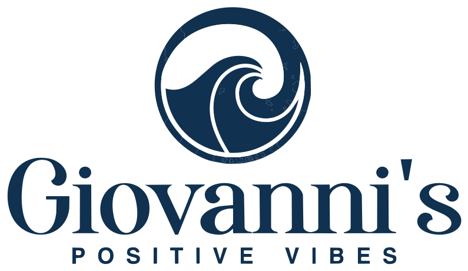

Giovanni's Positive VibesCharte graphique · direction « La Trajectoire »
v1.0 · juillet 2026

Charte graphique · v1.0 · juillet 2026
« Comprendre ce qui bloque. Renforcer ce qui relie. Mettre en mouvement ce qui doit changer. »
Ce que la marque dit, à qui, et sur quel ton. Tout support — post Instagram ou proposition commerciale — doit pouvoir se relire à travers cette page.
Giovanni's Positive Vibes est une structure d'accompagnement des transformations humaines, relationnelles et managériales. Elle aide les personnes, les équipes et les organisations à transformer les blocages en décisions plus claires, en coopérations plus solides et en changements durables.
La transformation est un déplacement : un point de départ, une prise de conscience, une mise en mouvement. Le dégradé de la vague du logo (turquoise → indigo) matérialise cette trajectoire et sert de fil conducteur à toute l'identité.
Leadership humain, communication, coopération, changement. Dirigeants, DRH, managers, équipes.
Transitions personnelles, blocages émotionnels, décisions, dynamiques relationnelles.
Journées thématiques, retraites, immersions, parapente expérientiel encadré.
Conférences, podcasts, vidéos, articles, livre, collaborations éditoriales.
| Orientation | Baseline | Usage |
|---|---|---|
| Institutionnelle | Transformer les dynamiques humaines. Renforcer les organisations. | Company Profile B2B, site corporate, propositions |
| Émotionnelle | Comprendre ce qui bloque. Retrouver ce qui met en mouvement. | Accompagnements, ateliers, contenus grand public |
| Orientée résultats | Des décisions plus claires. Des relations plus justes. Des équipes plus solides. | Présentation commerciale, conférence, page offre |
| Signature générale | Comprendre ce qui bloque. Renforcer ce qui relie. Mettre en mouvement ce qui doit changer. | Couverture, manifeste de marque |
Le logo est vectorisé, transparent, et s'adapte au fond : couleur sur fonds clairs, logotype blanc sur fonds sombres, monochrome pour les usages techniques. Fichiers officiels uniquement — jamais de redessin ni d'autre recolorisation.
assets/logo-gpv.svg (couleur, fond transparent — défaut sur fonds clairs) · assets/logo-gpv-blanc.svg (logotype blanc, icône couleur — fonds sombres et dégradé) · assets/logo-gpv-mono-nuit.svg (monochrome bleu nuit — filigrane, tampon, gravure, impression une couleur) · assets/logo-gpv-transparent.png (PNG transparent 1590 × 920, outils sans SVG) · assets/logo-gpv.jpeg (original, référence de fidélité).
Usage privilégié — fond blanc
Fonds clairs (perle, ciel) — usage direct, fond transparent
Dégradé signature — version logotype blanc
Fonds sombres — version logotype blanc

Monochrome bleu nuit — filigrane, tampon, une couleur
Aucun texte ni élément graphique ne pénètre la zone. Elle vaut aussi pour les bords de page et de cadre.
| Contexte | Taille minimale |
|---|---|
| Écran — logo complet | 140 px de largeur (lisibilité de « Positive Vibes ») |
| Écran — avatar / favicon (cercle seul, extrait du SVG) | 32 px |
| Print — logo complet | 28 mm de largeur |
Sept couleurs issues du logo, une règle de répartition 60 / 30 / 10, et un dégradé signature réservé aux moments clés.
La température varie selon le public : côté Organisations (B2B), le dégradé se fait discret (filets, soulignés) ; côté Expériences et grand public, il peut occuper des surfaces entières.
| Combinaison | Ratio | Verdict |
|---|---|---|
| Bleu nuit sur blanc | 13,3 : 1 | AAA — tout usage |
| Bleu nuit sur bleu ciel | 12,1 : 1 | AAA — tout usage |
| Blanc sur indigo | 9,8 : 1 | AAA — boutons, texte inversé |
| Texte secondaire sur blanc | 6,5 : 1 | AA — texte courant |
| Bleu nuit sur turquoise | 6,2 : 1 | AA — badges, encarts |
| Blanc sur azur | 3,6 : 1 | Grands titres (≥ 24 px) uniquement |
| Turquoise sur blanc | 2,2 : 1 | Jamais pour du texte |
Deux familles maximum : Poppins pour la voix des titres, Inter pour le confort de lecture. Toutes deux sur Google Fonts — identiques sur le web, les réseaux sociaux et le print.
Les difficultés d'un projet, d'une équipe ou d'une relation ne sont jamais uniquement techniques : elles tiennent aussi aux rôles, aux interprétations, aux non-dits et à la qualité des décisions. GPV relie la structure du pilotage de projet à la finesse du travail humain.
Casablanca, Maroc · accompagnements à distance · giovannispositivevibes@gmail.com
Transformations humaines, relationnelles et managériales
Quatre motifs déclinables partout. Ils évoquent la vague du logo sans jamais le copier ni le remplacer.
Des personnes réelles dans des situations réelles. La photographie prouve l'authenticité de la démarche — elle ne la met pas en scène.
Une seule charte, deux réglages. Le dégradé s'assourdit face aux organisations, il respire face au grand public.
GPV Organisations
Transformer les désaccords en conversations utiles et en décisions de coopération. Atelier construit sur vos cas réels.
Température B2B — fond blanc, un filet turquoise, un seul bouton indigo
GPV Expériences
Une journée pour sortir du pilote automatique : observer, comprendre, expérimenter — et repartir avec un engagement concret.
Température B2C — dégradé signature en surface pleine, bouton clair
Les formats de référence, leurs zones sûres et les règles de gabarit. Objectif : qu'un contenu GPV soit reconnaissable avant même d'être lu.
| Plateforme | Format | Dimensions | Zone sûre (texte et logo) |
|---|---|---|---|
| Post portrait (défaut) | 1080 × 1350 | Garder l'essentiel dans le carré central 1080 × 1080 (recadrage grille) | |
| Carrousel | 1080 × 1350 | Marges internes 96 px ; amorce visuelle de la diapositive suivante | |
| Story / Reel | 1080 × 1920 | 250 px en haut, 420 px en bas, 120 px à droite libres d'UI | |
| TikTok | Vidéo | 1080 × 1920 | 150 px en haut, 450 px en bas, 140 px à droite (icônes), 60 px à gauche |
| YouTube | Vignette | 1280 × 720 | Éviter l'angle inférieur droit (horodatage) ; lisible à 120 px de large |
| YouTube | Bannière chaîne | 2560 × 1440 | Zone visible sur tous écrans : 1546 × 423 centrée |
Le bloc d'accueil du futur site, la bannière LinkedIn et la signature e-mail partagent les mêmes constantes : fond clair ou dégradé signature, un seul bouton, beaucoup d'air.
Héros du site — dégradé signature + trajectoire en filigrane + un bouton principal
Bannière LinkedIn 1584 × 396 — nuit + trajectoire turquoise
Signature e-mail — logo rond, filet turquoise, coordonnées confirmées
Carte de visite, papeterie, roll-up et workbook : mêmes couleurs (CMJN indiqués section 03), mêmes typographies, mêmes motifs.